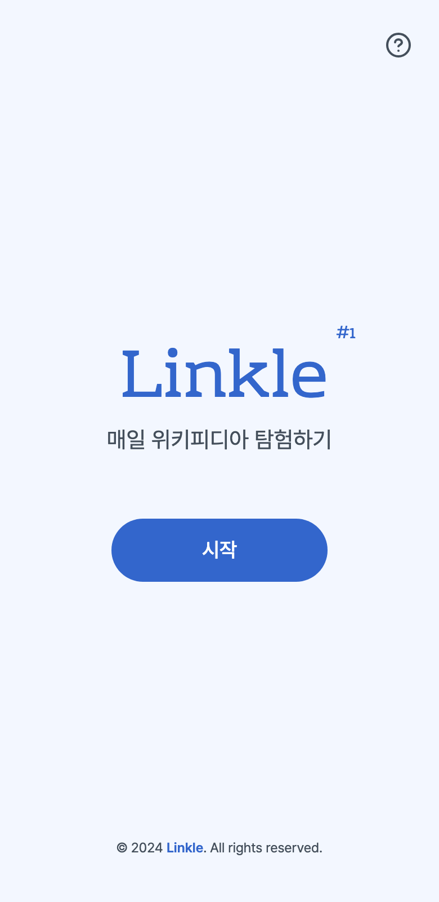
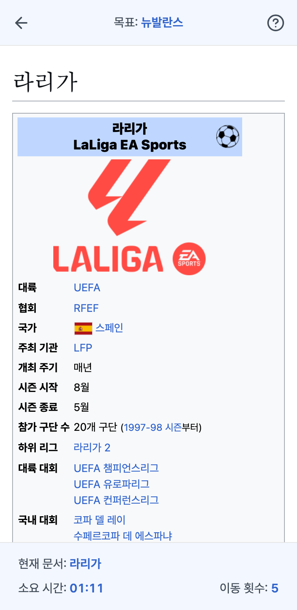
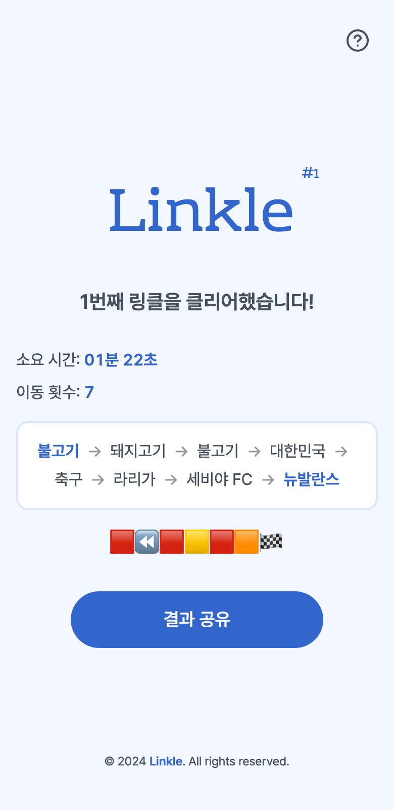

매일 들르는 한 장의 카드로 시작해, 지나온 길이 보이는 게임으로 끝나요
기존 링클의 색과 글꼴, 여백은 그대로 두고 화면이 하는 말을 다시 정리했어요. 시작 전에는 오늘에 대해 알려 주고, 게임 중에는 어디를 지나왔는지 보여 주고, 끝나면 내일 다시 올 이유를 남겨요. 아직 구현 전이고, 화면 속 이름 · 숫자는 예시예요.
시작 전에 오늘을 알려 줘요
몇 번째 문제인지, 몇 명이 도착했는지, 시작하면 무슨 일이 생기는지를 카드 한 장에 담아요. 규칙은 물음표 뒤가 아니라 화면에 있어요.
지나온 길과 색을 한 줄로 묶어요
게임 중에는 경로 띠가, 끝난 뒤에는 문서마다 색이 붙은 경로가 보여요. 색의 뜻을 따로 설명하지 않아도 읽혀요.
색 · 글꼴 · 로고 · 홈의 방향
#3366CC와 #F3F7FF, Pretendard와 Rhodium Libre, 밑줄 없는 L 로고는 그대로예요. 홈은 오늘 카드로 가고, 로그인과 오늘의 문제 순위는 두지 않아요.
홈이 "오늘 한 판"만 말할지, 여러 놀이의 입구가 될지가 갈림길이에요
무한 모드(지난 문제 · 커뮤니티)가 생기면서 홈이 할 일이 늘었어요. 매일 한 번 들르는 사람이 가장 많을 화면이라, 무엇을 가장 크게 둘지를 기준으로 셋을 그려 봤어요. A로 정했고, 다른 곳으로 가는 길은 B의 아래 탭을 빌려 와요. 탭은 홈에서만 보이고 게임 화면에는 나오지 않아요.
카드 한 장이 시작 → 진행 → 결과로 바뀌어요
핵심 한 수 · 홈의 주인은 오늘의 문제 카드 하나예요. 다른 곳은 떠 있는 아래 탭으로 가요
좋은 점
- 처음 온 사람도 무엇을 누를지 고민하지 않아요
- "하루 한 번"이라는 정체성이 화면에 그대로 보여요
- 지금 구조(주소 하나, 상태로 화면 결정)와 맞아요
대가
- 아래 탭이 생겨 홈이 조금 덜 단순해져요
- 오늘 문제를 푼 뒤에는 카드가 비어 보이지 않게 따로 설계해야 해요
선례 · Krillion 시작 화면 · Wordle 시작 화면(2차) · Contexto 오늘 카드
아래 탭으로 오늘 · 지난 문제 · 커뮤니티 · 기록을 오가요
핵심 한 수 · 늘 보이는 아래 탭이 네 곳을 같은 무게로 놓아요
좋은 점
- 무한 모드가 한눈에 보여 오래 머물러요
- 놀이가 더 늘어도 탭만 더하면 돼요
대가
- 오늘의 문제가 여러 타일 중 하나가 돼요
- 게임 화면의 고정 Header · Footer에 탭까지 겹치면 문서가 좁아져요
- 커뮤니티가 열리기 전(1단계)에는 탭이 비어요
선례 · Contexto가 오늘 카드와 Unlimited 카드를 한 화면에 쌓아요. 아래 탭을 쓰는 데일리 게임은 직접 확인한 것이 없어요
홈 없이 문서 위에 시작 시트를 띄워요
핵심 한 수 · 들어오자마자 게임판이 보이고, 시트를 내리면 바로 시작돼요
좋은 점
- 한 번 누르면 바로 플레이예요
- 결과도 같은 시트로 올라와 흐름이 하나예요
대가
- 시작 전에 출발 문서를 받아야 해서 "시작해야 공개"라는 규칙과 부딪혀요
- 흐린 문서도 제목과 그림이 비쳐 스포가 돼요
- 무한 모드로 갈 자리가 없어요
선례 · 꼬맨틀은 첫 화면이 곧 게임이에요. 문서 위에 시트를 띄우는 위키 게임은 찾지 못했어요
화면은 깔끔한데, 꼭 알려 줘야 할 것이 빠져 있어요
지금 링클(main bce0deb)을 빌드해 휴대폰 크기로 찍었어요. 기존 디자인을 그대로 옮긴 상태라 모양은 정돈돼 있지만, 시작 전 · 게임 중 · 끝난 뒤 세 순간 모두 사용자가 궁금해할 것이 화면에 없어요.

123
456
789- 오늘에 대해 아무것도 알려 주지 않아요. 문제 번호는 로고 옆 작은 글자뿐이고, 날짜, 도착한 사람 수, 시작하면 시간이 흐른다는 사실이 없어요. apps/web/src/screens/Home.tsx — 로고 · 문구 · PrimaryButton
- 규칙이 물음표 뒤에 숨어 있어요. 처음 온 사람은 규칙을 모른 채 시작을 누르고, 그 순간부터 시간이 흘러요. apps/web/src/ui/parts.tsx — Help(Modal)
- 갈 곳이 없어요. 화면 아래는 저작권 문구가 차지하고, 어제의 기록이나 지난 문제로 가는 길이 없어요. apps/web/src/screens/Home.tsx — 바닥 문구 / App.tsx — 경로가 "/" 하나
- 지나온 길이 보이지 않아요. 머리에는 목표 이름만 있고, 휴대폰에서는 출발 문서도 가려져요. 몇 번째 문서인지, 어디서 왔는지를 기억에 맡겨요. apps/web/src/screens/Game.tsx — header "목표:" (출발은 sm 이상에서만)
- 위치를 두 번 말해요. 아래 "현재 문서"는 바로 위 문서 제목과 같은 말이에요. 그 한 줄 때문에 Footer가 두 줄(89px)이 돼 문서가 좁아져요. apps/web/src/screens/Game.tsx — footer 첫 줄
- 되돌아가기가 손에서 가장 멀어요. 왼쪽 위에 화살표만 있고, 휴대폰에서는 어느 문서로 돌아가는지 글자가 없어요. apps/web/src/screens/Game.tsx — header 왼쪽 버튼(제목은 sm 이상에서만)
- 도착한 순간이 없어요. 목표에 닿으면 곧바로 홈으로 바뀌고 결과가 로고 아래에 덧붙어요. 숫자는 글줄로 나열돼요. apps/web/src/App.tsx — Daily / Home.tsx — Result
- 경로와 색이 따로 놀아요. 경로는 상자 안에, 색은 그 아래 한 줄에 있어서 어느 문서가 어느 색인지 짝을 맞춰 세어야 해요. 색의 뜻도 화면에 없어요. apps/web/src/screens/Home.tsx — PathTrail · 이모지 줄
- 끝난 뒤 할 일이 하나뿐이에요. 공유를 하고 나면 다음 문제까지 얼마나 남았는지, 내 기록이 어떤지, 더 풀 것이 있는지 알 수 없어요. apps/web/src/screens/Home.tsx — Result의 버튼 하나
- 아이콘이 덜 다듬어졌어요. 파비콘의 L은 글꼴을 받기 전에는 다른 세리프 글자로 보이고 가운데에서 조금 벗어나 있어요. 홈 화면에 추가했을 때의 앱 아이콘과 공유 미리보기 그림이 없어요. apps/web/public/favicon.svg · index.html
오늘의 문제가 카드 한 장으로 말을 걸어요
지금은 로고와 시작 버튼만 있어요. 가운데에 "오늘의 링클" 카드를 두고 번호, 날짜, 도착한 사람 수, 시작하면 생기는 일을 담아요. 처음 온 사람이 규칙을 읽고 누를 수 있게 세 단계 설명을 화면에 꺼내 놓아요.
지금
시안
문서 속 링크만 눌러 이동해요파란 글자가 다음 문서로 가는 길이에요
목표 문서에 도착하면 끝나요이동 횟수와 시간이 기록돼요
지나온 길이 색으로 남아요목표와 가까운 문서일수록 파랑이에요
- 카드 머리에 번호와 날짜를 크게 써요. 로고 옆 작은 "#1" 대신 "오늘의 링클 #128 · 11월 19일 목요일"이 카드의 제목이에요. 공유받고 온 사람이 같은 문제인지 바로 확인해요.
- 출발과 목표는 잠긴 칸으로 보여 줘요. 무엇이 숨겨져 있는지, 시작하면 무엇이 열리는지가 그림으로 읽혀요. "시작 전에는 공개하지 않는다"는 원칙은 그대로예요.
- 시작 버튼 아래에 결과를 미리 말해요. 누르는 순간 시간이 흐른다는 것을 버튼 바로 아래 한 줄로 알려요. 지금은 도움말을 열어야 알 수 있어요.
- 규칙 세 줄을 카드 하나에 담아요. 줄마다 그 규칙을 그린 작은 그림이 붙어요. 누르는 손, 목표 깃발, 색 칸이에요. 처음 온 날에만 보이고 한 번 끝까지 풀면 사라져요. 물음표는 그대로 남아 다시 볼 수 있어요. Contexto가 같은 방식이에요.
- 연속 일수는 작게, 왼쪽 위에 둬요. 기록이 있을 때만 보여요. 누르면 내 기록 시트(05장)가 열려요.
- 아래 탭은 떠 있는 유리 알약이에요. 오늘 · 어제의 기록 · 지난 문제 · 커뮤니티 네 곳을 오가요. 반투명해서 화면을 내리면 내용이 뒤로 비쳐요. 게임과 도착 화면에는 나오지 않아요. 저작권과 만든 사람은 도움말 아래로 옮겨요.
지나온 길은 위에, 되돌아가기는 엄지 아래에 있어요
지금은 머리에 목표 이름, 바닥에 현재 문서 · 시간 · 횟수가 두 줄로 있어요. 머리 아래에 경로 띠를 새로 두고, 바닥은 한 줄로 줄여 되돌아가기를 왼쪽 아래로 내려요. Header와 Footer가 늘 함께 보인다는 원칙은 그대로이고, 문서가 보이는 높이는 지금과 같아요(651 → 636px).
시안 — 읽는 중
- 목표는 깃발과 함께 머리의 주인이에요. "목표: 뉴발란스"라는 글줄 대신 깃발 표시와 이름이에요. 같은 깃발이 결과 화면의 도착 표시로 다시 나와요.
- 경로 띠가 지나온 문서를 보여 줘요. 출발부터 지금 문서까지 한 줄로 이어지고, 길어지면 앞쪽이 흐려지며 밀려요. 바닥의 "현재 문서"는 이 띠의 마지막 칸이 대신해요. Wikispeedia의 "지금까지 누른 링크" 줄을 한 줄 띠로 바꾼 거예요. 띠의 문서는 누를 수 없어요. 이동은 문서 속 링크와 되돌아가기뿐이에요.
- 되돌아가기는 왼쪽 아래, 갈 곳의 이름과 함께예요. 엄지가 닿는 자리이고, 누르기 전에 어디로 가는지 보여요. Wiki Speedruns도 조작을 아래 띠에 둬요. 되돌아가도 횟수가 느는 것은 지금과 같아요.
- 시간과 횟수는 아이콘과 숫자만 남겨요. "소요 시간:", "이동 횟수:"라는 이름표를 빼서 한 줄이 돼요. 숫자 폭이 고정돼 초가 바뀌어도 흔들리지 않아요.
시안 — 다음 문서를 여는 중
- 문서를 여는 동안 무엇을 여는지 말해요. 지금은 2px 선과 흐려짐뿐이에요. 누른 링크의 이름을 알약으로 띄워, 잘못 눌렀는지 바로 알 수 있게 해요. 실패하면 같은 자리에서 이유를 알려요.
도착하면 지나온 길이 색과 함께 한 장에 펼쳐져요
지금은 목표에 닿는 순간 홈으로 바뀌고 숫자가 글줄로 나와요. 도착 전용 화면을 두고, 숫자는 타일 세 개로, 경로는 문서마다 색이 붙은 세로 목록으로 보여 줘요. 공유하기 전에 무엇이 공유되는지 눈으로 확인할 수 있어요.
지금
시안
뉴발란스에 도착!
128번째 링클 · 11월 19일
- "어디에 도착했는지"가 제목이에요. "N번째 링클을 클리어했습니다!"는 공유 문구에 그대로 남고, 화면에서는 목표 이름과 깃발로 도착을 말해요. 게임 화면의 깃발이 그대로 커져서 올라와요.
- 숫자 셋은 타일로 나란히 둬요. 이동, 시간, 도착 순서를 같은 크기로 놓아요. 도착 순서는 서버 응답이 오면 채워지고, 그 전에는 칸만 비워 둬요. 결과 화면은 응답을 기다리지 않아요.
- 문서마다 색이 붙고, 색의 뜻은 바로 아래 한 줄이에요. 경로와 색을 한 줄로 묶어서 어느 문서가 목표와 가까웠는지 세지 않아도 읽혀요. 되돌아간 줄은 회색 화살표로 구분하고, 가장 가까운 색은 링클의 파랑이에요. Six Degrees of Wikipedia의 경로 카드가 같은 읽기 방식이에요.
- 공유는 이 화면의 하나뿐인 주 행동이에요. 누르면 기존과 같은 문구가 복사돼요. 문서 제목은 들어가지 않고 색만 들어가요. 그 아래 "홈으로"는 테두리 없는 글자 버튼이에요. 크기가 다른 버튼 두 개가 나란히 놓이지 않아요.
- 다음 문제까지 남은 시간을 맨 아래에 둬요. 자정 기준으로 줄어들어요. 내일 다시 올 이유를 숫자 하나로 남겨요. Framed와 Krillion이 끝난 화면 아래에 같은 것을 둬요.
오늘을 끝낸 사람에게는 기록과 더 풀 것을 보여 줘요
지금은 끝난 뒤 다시 들어와도 같은 결과가 로고 아래에 붙어 있어요. 오늘의 카드가 "도착 완료" 모습으로 바뀌고, 그 아래에 어제의 링클과 지난 문제가 이어져요. 내 기록은 기기에 저장된 값으로 그려요. 로그인은 없어요.
시안 — 오늘을 끝낸 뒤의 홈
- 같은 카드가 "도착 완료"로 바뀌어요. 시작 전의 잠긴 칸이 출발과 목표 이름으로 열려요. 카드의 자리와 크기가 같아서 오늘 한 일이 그 자리에 채워진 것처럼 보여요.
- 색 띠와 숫자가 결과를 한 줄로 요약해요. 자세한 경로는 카드를 누르면 04장의 도착 화면으로 다시 열려요.
- 남은 시간이 시작 안내 자리를 대신해요. 시작 전에 "누르면 시간이 흘러요"가 있던 자리예요. 자정이 지나면 카드는 새 번호의 시작 전 모습으로 돌아가요.
- 오늘을 끝내면 어제의 링클과 지난 문제가 아래로 이어져요. 어제 문제는 출발과 목표, 도착 인원, 최단 횟수를 미리 보여 줘요. 목록은 아래 탭 뒤로 비치며 이어져요. 오늘의 문제보다 앞에 나오지 않아요.
시안 — 내 기록
내 기록
이동 횟수
기록은 이 기기에만 저장돼요. 로그인은 필요 없어요.
- 내 기록은 숫자 넷이에요. 플레이 수, 연속 일수, 최고 연속, 평균 이동이에요. 승률은 두지 않아요. 링클에는 실패가 없기 때문이에요.
- 이동 횟수 분포에서 오늘이 파랑이에요. NYT 도움말에 나온 Wordle 기록 화면과 같은 읽기 방식이에요. 다른 사람과 비교하지 않고 내 평소와 비교해요.
- 기기에만 저장된다는 것을 적어 둬요. 브라우저를 바꾸면 기록이 없는 이유를 미리 알려요.
로고는 지금의 L 그대로, 정확히 가운데에 둬요
파란 바탕에 흰 L이라는 지금의 로고를 유지해요. 바뀌는 것은 정렬과 만드는 방식이에요. 화면 속 아이콘과 유사도 색도 한 벌로 정해요. 운영체제마다 모양이 다른 이모지는 공유 문구에만 쓰고, 화면에서는 직접 그린 칸을 써요.
앱 아이콘
워드마크의 L 하나만 써요. 글자가 차지하는 실제 범위를 재서 그 중심을 칸의 중심에 맞췄어요. 글자 상자 기준으로 놓으면 L이 오른쪽 아래로 쏠려 보여요.
지금 파비콘은 글꼴 이름으로 글자를 쓰고 있어서, 글꼴을 받기 전에는 다른 세리프 글자로 보여요. 글자를 윤곽선으로 바꿔 어디서나 같은 모양이 되게 해요. 같은 그림으로 홈 화면 추가용 아이콘(192 · 512, 가장자리 여백 포함)과 공유 미리보기 그림(1200×630)을 만들어요.
유사도 표시 — 화면용
공유 문구의 이모지와 1:1로 대응해요. 가장 가까운 단계가 링클의 파랑이에요.
색만으로 구분하지 않게, 되돌아감과 도착에는 그림을 넣고 경로 목록에는 늘 문서 이름이 함께 나와요.
화면 아이콘 한 벌
이미 쓰고 있는 lucide에서 고르고, 선 굵기를 1.75로 맞춰요(지금은 기본 2). 뜻 하나에 그림 하나예요. 깃발은 늘 목표와 도착, 굽은 화살표는 늘 되돌아가기예요.
색 둘과 글꼴 둘은 그대로, 새 값은 보조 글자색과 유사도 색뿐이에요
색
| 쓰임 | 값 | 출처 |
|---|---|---|
| 주 색 · 링크 · 강조 숫자 | #3366CC | --color-primary |
| 바탕 · Header · Footer | #F3F7FF | --color-secondary |
| 본문 글자 | #444F5B | --color-ink |
| 카드 테두리 | #DBE8F9 2px | --color-line-blue |
| 구분선 | #E5E5E5 | --color-line |
| 보조 글자 (새로 필요) | #6B7682 | 이름표와 설명을 본문보다 한 단계 낮추려면 필요해요. 흰 바탕 대비 4.6:1 |
| 유사도 5단계 (새로 필요) | #E5534B #F0883E #EAB308 #57AB5A #3366CC | 이모지 색에 맞췄고 마지막은 주 색이에요 |
글자와 크기
| 칸 | 값 |
|---|---|
주 버튼 PrimaryButton | 높이 56 · 완전히 둥근 모서리 · 18/500 (지금과 같음) |
| 오늘 카드 (새 컴포넌트) | 흰 바탕 · 모서리 20 · 테두리 2 · 안쪽 20 |
| 게임 Header · 경로 띠 · Footer | 56 · 44 · 64 (지금 Header 60 · Footer 89) |
| 되돌아가기 (새 모양) | 높이 44 알약 · 최대 폭 190 · 넘치면 말줄임 |
| 보조 버튼 (글자 버튼) | 테두리와 바탕 없음 · 높이 48 · 16/500 · 주 색 |
| 게임 방법 카드 (새 컴포넌트) | 흰 바탕 · 모서리 20 · 줄 높이 56 · 그림 36 |
| 아래 탭 (새 컴포넌트) | 높이 64 알약 · 좌우 16 · 아래 20에 떠 있음 · 흰색 50~74% + 뒤 흐림 18 · 밝은 테두리와 파란 그림자 · 고른 칸은 흰 알약 |
| 아이콘 | lucide · 화면 20~24 · 선 1.75 |
구현할 때 지킬 것
화면 말 대응표
코드의 이름은 화면에 쓰지 않아요.
| 코드 | 화면 |
|---|---|
puzzle.end | 목표 (끝난 뒤에는 "도착") |
back 이벤트 | 되돌아가기 · 되돌아감 |
moves | 이동 · 이동 횟수 |
finish_order | 도착 순서 (공유 문구에서는 "일일 순위") |
archive | 지난 문제 |
stats | 내 기록 |
level 0~4 | 목표와 멀어요 → 가까워요 |
규칙
참고한 제품과 문서
시작 화면
- Krillion · 시작 화면 (2026-11) — 한 줄 규칙, 큰 시작 버튼, 바로 아래 "DIVE #127", 접히는 게임 방법. 오늘 카드의 구성을 가져왔어요. 픽셀 아트와 아래 광고 띠는 가져오지 않아요.
- Wordle 시작 화면 비평 (2025-09) (2차) — 로고 → 한 줄 설명 → Play → 날짜 · 번호 순서. NYT 사이트는 열리지 않아 직접 확인하지 못했어요.
- Contexto · 첫 화면 (2026-11) — "Daily game · 날짜 · Play" 카드와 그 아래 Unlimited 카드. 게임 방법이 처음에만 화면 안에 보이다가 사라지는 방식을 규칙 세 단계에 가져왔어요.
- The Wiki Game · 시작 카드 (2026-11) — START와 GOAL을 나란히 놓는 배치만 가져왔어요. 링클은 시작 전에 두 문서를 숨기므로 잠긴 칸으로 바꿨어요.
게임 중
- Wiki Speedruns · 게임 화면 (2026-11) — 목표와 시간을 아래에 고정한 띠. 엄지 자리에 조작을 두는 근거예요. 이 게임은 게임 중에 경로와 횟수를 보여 주지 않아서 그 부분은 더했어요.
- Wikispeedia · 게임 화면 (2026-11) — "지금까지 누른 링크: A, B …"를 늘 보여 주는 방식이 경로 띠의 출발점이에요. 글줄이 휴대폰에서 가로로 잘리는 것은 한 줄 띠와 흐려지는 앞쪽으로 풀었어요.
- The Wiki Game · 게임 화면 (2026-11) — 머리 아래에 목표를 늘 붙여 두는 것. 본문을 가리는 광고와 실시간 순위는 가져오지 않아요.
끝난 뒤
- Six Degrees of Wikipedia · 경로 결과 (2026-11) — 문서마다 색 띠를 붙여 세로로 쌓는 경로 카드. 색이 붙은 경로 목록의 선례예요.
- Framed · 끝난 화면 (2026-11) — 정답 → 색 칸과 공유 → 분포 → "Next Movie: 05:37:51" 순서. 공유 다음에 남은 시간을 두는 배치를 가져왔어요.
- Krillion · 끝난 화면 (2026-11) — "STREAK · PLAYED · AVG · BEST" 한 줄과 "NEXT DIVE IN". 그 아래 길게 이어지는 홍보 묶음은 공유 버튼을 밀어내서 가져오지 않아요.
기록과 지난 문제
- NYT 도움말 · Wordle (2026-11) — 숫자 넷과 시도 횟수 분포로 된 기록 화면, 그리고 지난 문제는 기록에는 들어가되 연속 일수에는 들어가지 않는다는 규칙. 링클은 지난 문제를 내 기록에도 넣지 않아요.
- Contexto · 지난 게임 (2026-11) — 오늘이 강조된 주간 띠와 월 달력. 지난 문제 화면을 그릴 때 쓸 선례예요. 이번 시안에는 그 화면이 없어요.
- 꼬맨틀 (2026-11) — 공유 문구에 무엇을 넣을지 고르는 설정. 링클은 기존 문구를 유지하기로 해서 가져오지 않았어요.
게임 화면부터 바꾸고, 홈과 도착 화면은 서버가 붙은 뒤에 올려요
나눠 올릴 순서
/api/today의 값을 써요.